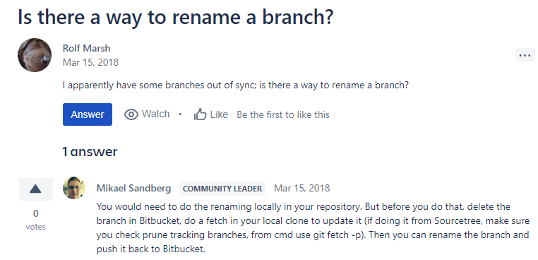

Date: 4/23/2019
Things I did today
I created the PNG logo and added it to the site. I also created a bunch of .html files to build the navigation.
With help I was able to get the Zohomail connected to the autus.dev domain. I was also able to create a droplet
on Digital Ocean. My plan was to get this basic page onto there, but then I screwed myself over because I used
a domain e-mail for my verification e-mail which also meant I activated the E-mail 2-Factor for it as well. Basically
I screwed myself over. I just read that I wrote "screwed myself over" twice. Three times. Lyrics of fury.
Date: 4/24/2019
Layoffs and Source Control
Today's lesson is: You don't have to CLONE every branch of a Repository. You know how there's no such thing
as a stupid question? There is stupid answers. And my answer for how to handle a Master/Dev/Dev2019 branch
was to clone it several times. Yeah. You only need to clone it once. Also, how did I fix my Digital Ocean problem?
Basically I was still logged into it at work, so I hopped into the account, and updated the e-mail address. But
unfortunately, I had little to no time to work on it because today my company laid off like 15% of the office. Or
8 people. So I was so busy with mini meetings and "oh shit are we next" chatter that i didn't even get to update my
feed. Anyway, my lesson was "I still need to learn a lot about Git".
Date: 4/26/2019
AM I STARTING TO GET GIT?
As I was driving to work, I suddenly came to the conclusion I didn't need to ever LEAVE the public folder.
I simply just had to BRANCH from my master, and I'd STILL be in the same folder. There was this mental block
to understanding GIT, and I'm thinking that today, something clicked. So I branched, and I pulled, and low and
behold I was able to seamlessly update the site with the merge in the Development Branch. That being said
Anthony thinks pulling directly into serving a website is a horrific idea. Oh well.
Date: 4/29/2019
How to rename a branch in BitBucket
So in a bold move of courage, I dug deep within and found the strength to rename the primary dev branch for
the Magento/Mor Website. Long story short, you branch off the old branches to a new one locally, then push that
up to the BitBucket repo, and then from there, you physically delete the old branches via site. Lastly, if you
want to, you can then delete your local branches. Pretty sick huh? *SHINGGGGGGGGGGGGGGGGGG!*

In other news, I failed miserably at following Anthony's instructions on how to start a webserver: So first here
is the link to the guide
- So number 1: I did NOT go to Google Domains and set the NS Records, because I THOUGHT I HAD DONE THAT, but I had
to revert it in order to get my e-mails in order, but then I never came back and updated it. (According to Anthony
he says I am a FUCK BREATH)
- So number 2: The Token Generated Dashboard. So, on step "Configure automatic HTTP cert challenge" I was instructed
on step one to generate a token for "CADDY-DNS", which I did, but then the instruction on step 4 told me to change
a line to include this: Environment=CADDYPATH=/etc/ssl/caddy DO_AUTH_TOKEN=<token generated from dashboard> so I did
EXACTLY WHAT IT SAID, and wrote <token generated from dashboard> instead of the actual token which was generated
- Then number 3: I somehow skipped a step (Install Caddy 7.2) where I didn't change ownership.
- Lastly (number 4) I did a typo in my Caddyfile which directed to audtus.dev instead of autus.dev
- Finally, for extra credit, it turns out my index.html was wrong. So jesus, kill me already